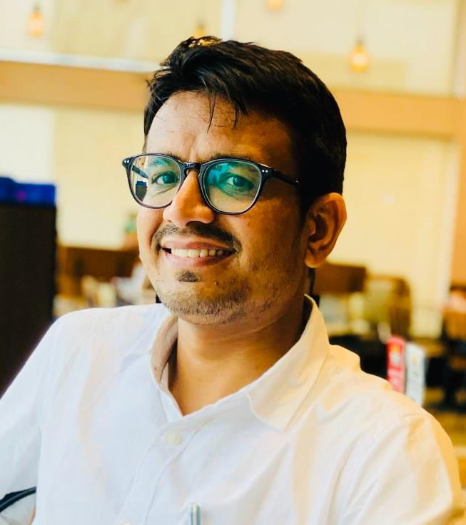

Dr. S.K. Choudhary
Assistant Professor, CSE, TIET Patiala
PhD, Dept. of CSE - IIT Madras
Email: suresh.kumar1@thapar.edu
suresh007@alumni.iitm.ac.in
I am an Assistant Professor in the
Computer Science and Engineering Department
at Thapar Institute of Engineering and Technology (TIET), Patiala.
Prior to this, I worked in the Cyber Security Wing at
Research Domains: Artificial Intelligence, Applied Ontology, Natural Language Understanding (NLU)
Ongoing Research Activities:
Currently, I am focused on NLU projects. Applied Ontology also remains my core research interest, and I am looking for a suitable candidate to explore a few promising directions.
1. Honey-Prompts for Detecting Malicious AI Interactions
2. Repetition-Aware Abstractive Text Summarization
3. Adaptive Skill Unlearning
4. Erasing Target and Correlated Knowledge in LLMs
Interdisciplinary Ideas:
1. Astro-SSL : At the Crossroads of Astrophysics and Machine Learning
(in-collboration with researchers from University of Strasbourg and NASA)